Collaborations
En cours ...
Projets récents et leurs bandes sons.
Bande-annonce à renseigner pour ce projet.
Site en cours de maintenance. La bande originale arrive bientôt.
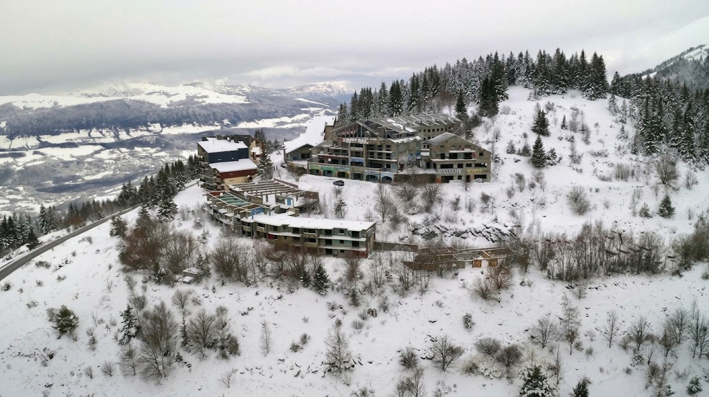
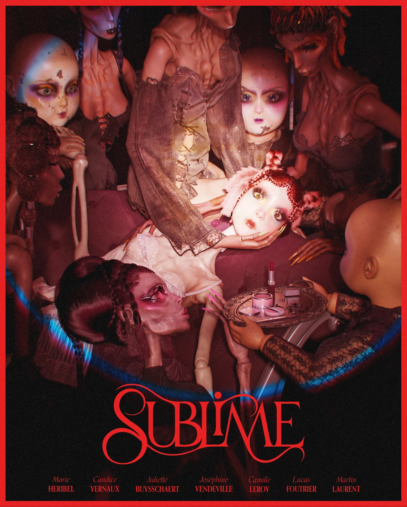
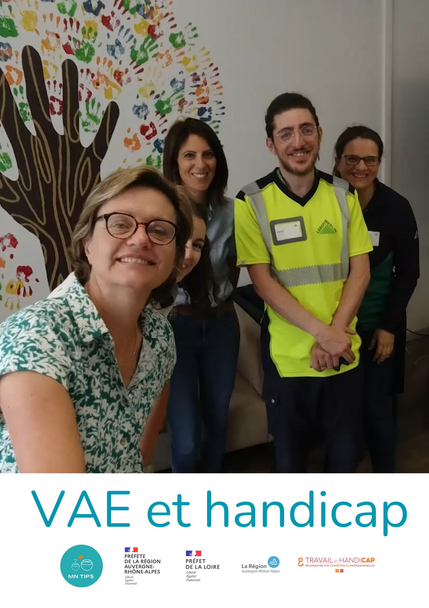
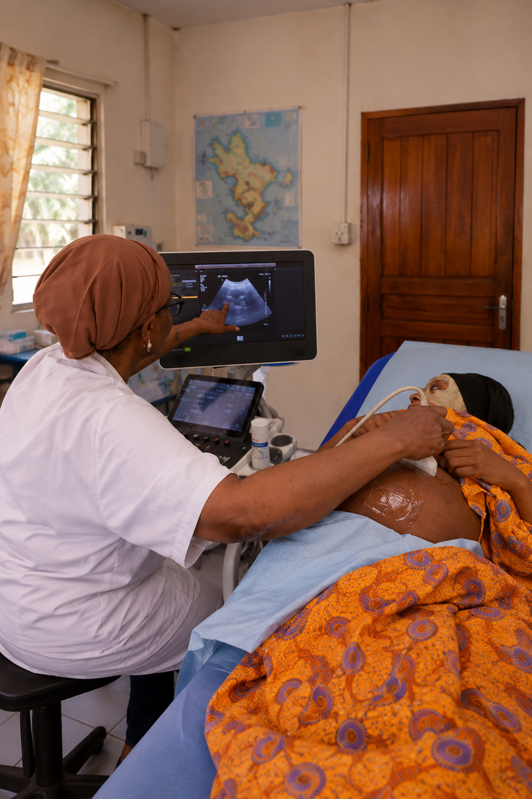
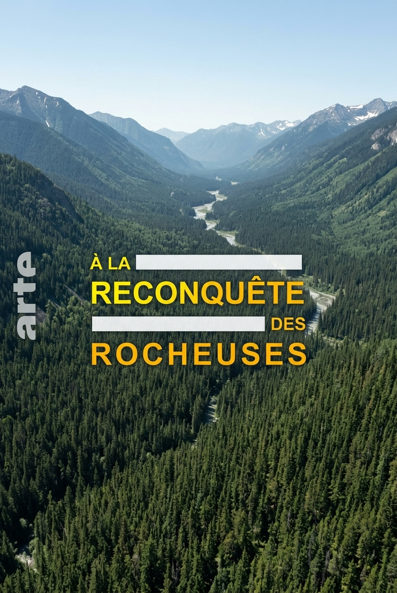
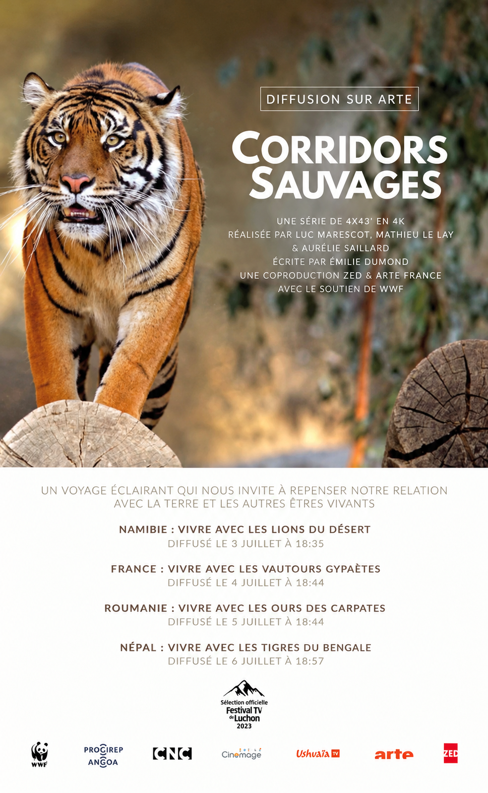
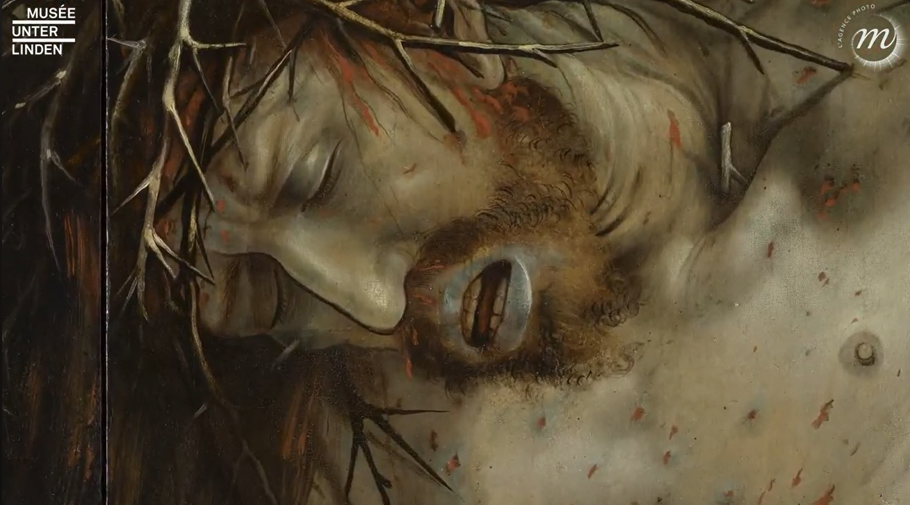
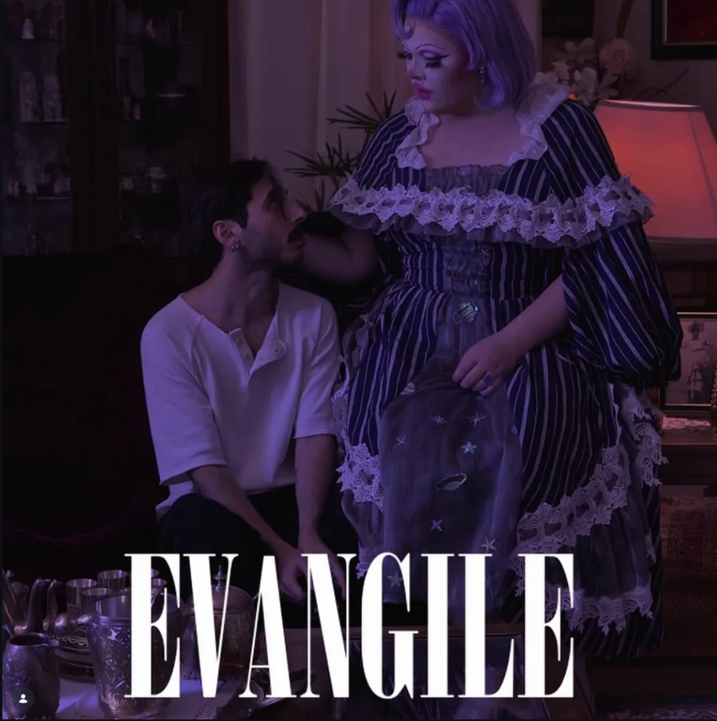
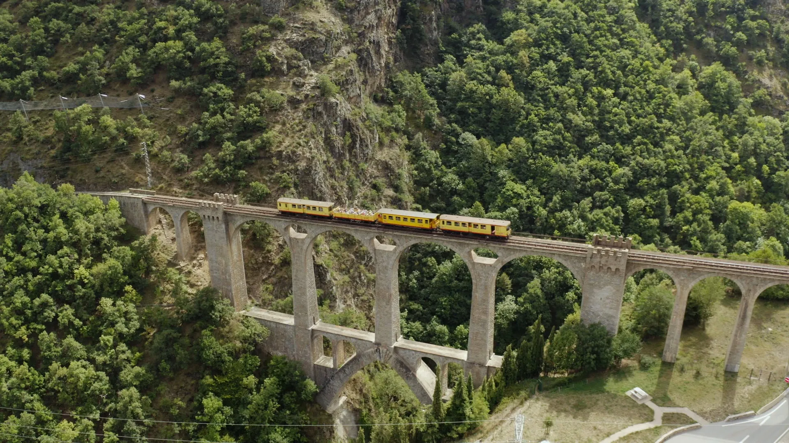
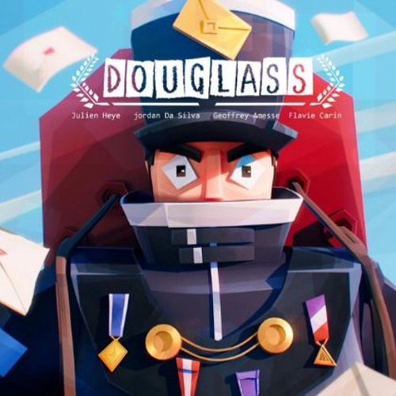
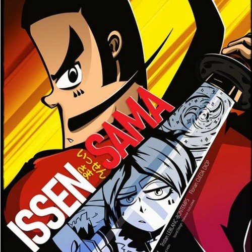
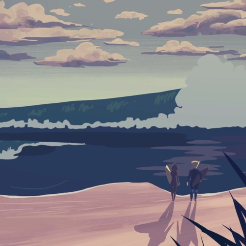
Site en cours de maintenance. La bande originale arrive bientôt.
En cours ...
En cours ...
Guitariste depuis l'âge de 13 ans, je suis diplômée d'une licence en musicologie (Saint-Étienne) et formée à la composition contemporaine auprès de Pascale Jakubowski (Conservatoire de Saint-Étienne), ainsi qu'à la composition pour l'image auprès d'Olivier Militon (Conservatoire d'Annecy). Après une expérience d'assistante et co-compositrice au studio JRA à Paris, je compose aujourd'hui pour la télévision et divers artistes.
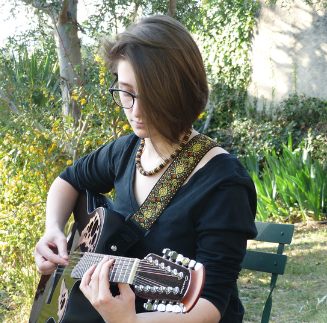
Envie de collaborer sur un projet ou tout simplement d'échanger ? N'hésitez pas à m'écrire !
Mail : mail@ingridtronchon.fr